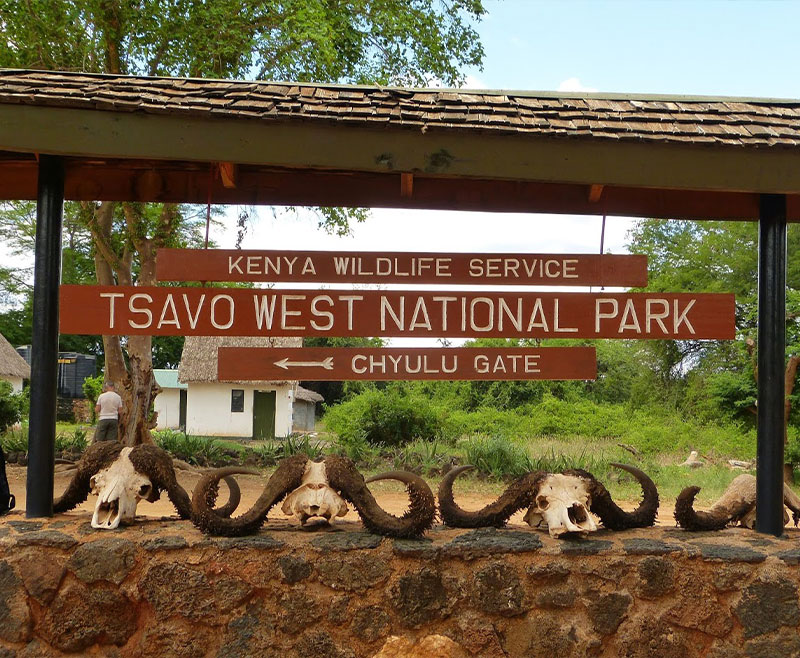
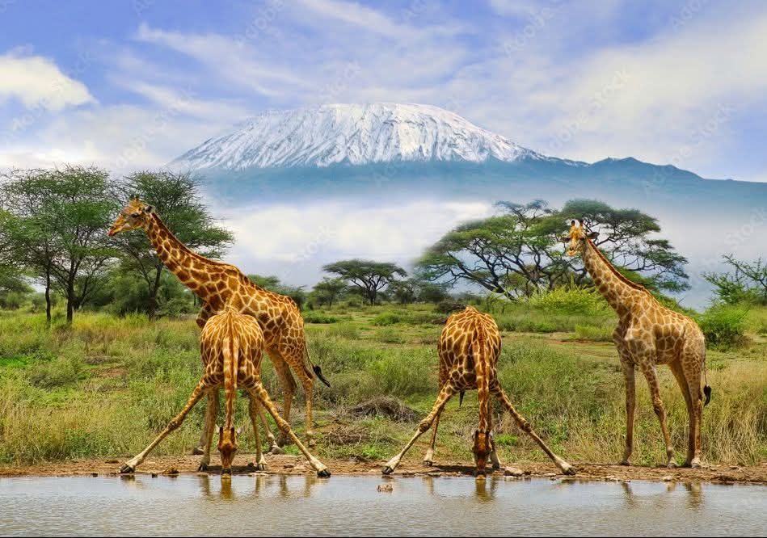

I Nostri Safari

Tsavo Est
Elefanti rossi, tramonti africani e natura selvaggia nel cuore del Kenya.

Tsavo Est & Amboseli
Safari con vista spettacolare sul Monte Kilimangiaro.

Tsavo Est & Taita Hills
Vivi la magia della savana africana e il safari notturno di Taita Hills.

Tsavo Est, Tsavo Ovest & Amboseli
Tutta la bellezza dello Tsavo in un safari unico, abbinata ad Amboseli e al maestoso Kilimangiaro.

Masai Mara + Nairobi
Vivi la magia del Masai Mara e, da luglio a settembre, la grande migrazione degli gnu.

Tsavo • Taita Hills • Amboseli
Il safari più gettonato: Tsavo, il Kilimangiaro e il magico safari notturno.

Tsavo • Taita • Amboseli
Un tour completo tra i principali parchi del Kenya e paesaggi indimenticabili.

Masai Mara & Nakuru
Big Five, fenicotteri rosa e paesaggi spettacolari del Kenya.

Masai Mara • Nakuru • Amboseli • Tsavo
Un viaggio straordinario dal Masai Mara fino alla costa del Kenya.

Masai Mara, Nakuru, Amboseli, Tsavo Est/Ovest, Taita Hills
Un viaggio straordinario tra Masai Mara, Nakuru, Amboseli, Tsavo Ovest e Tsavo Est fino alla costa kenyota.

Masai Mara, Nakuru, Amboseli, Tsavo Est/Ovest, Taita Hills
L’emozione autentica dei Big Five nella savana più famosa dell’Africa.